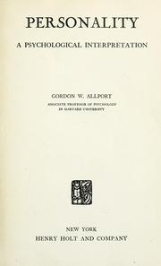

Personality: A Psychological Interpretation
Book·Gordon W. Allport, 1937·人格：心理学的解释

Allport discusses the concept of traits systematically and argues that personality is a person's own stable set of tendencies.
- Author
- Gordon W. Allport
- Year
- 1937
- Difficulty
- Advanced
- Kind
- Primary text
- Schools
- Trait Theory
- Core theories
- Lexical Hypothesis
Editions
- English edition Personality: A Psychological Interpretation Gordon W. Allport · Henry Holt, first edition · 1937 Open Library ↗